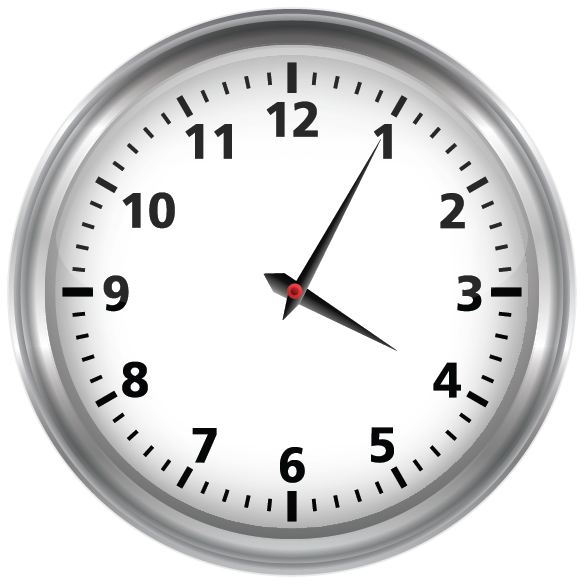
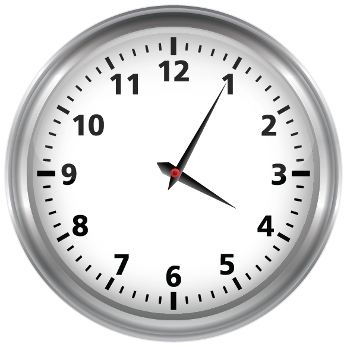
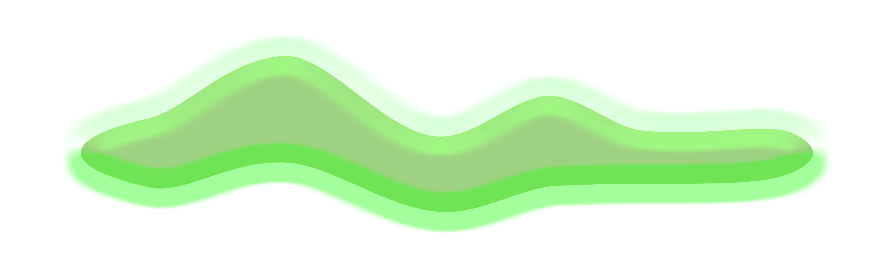
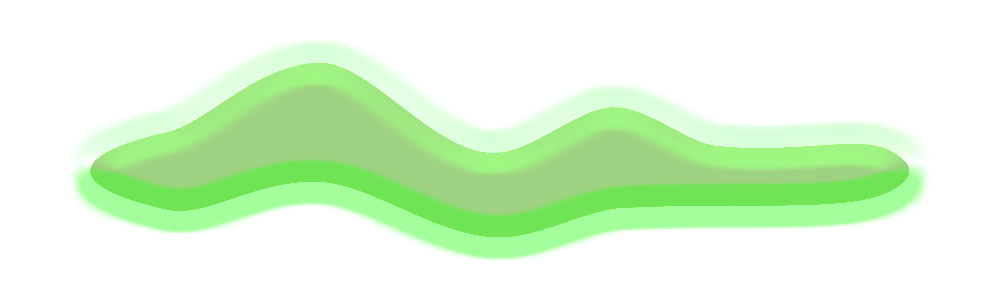

 



IMM1
×
Intermediate Meme Museum is a Minnesota-based platform for expanding the discourse and practices around memes. IMM is supported
by Midway Contemporary Art’s Visual Arts Fund. IMM1 was released 12/15/18. IMM2 will be released 3/16/19. IMM3 will be released
6/15/19.
IMM1: About the Artists Martin Gonzales: I’m a Chicano artist who makes work about being Chicano but only inherently, not
intentionally. Chicano perhaps only on accident. It doesn’t seem like there is much of a way out of making Chicano art. Sometimes
I try and meditate but end up not meditating, but that in fact is meditating… yeah…. I’m a Chicanx artist who makes Chicanx
art which actually isn’t Chicanx art but is in fact Chicanx art…. God damn…. I get distracted so easily. What do I want people
to know about who I am? I really struggle with this world and what is expected by our values as we get older, I’m broke as
fuck, I just moved back into my childhood home, I’m 28, and I think ADHD is real as fuck…. Every time I make something it’s
an attempt at trying to make sense of this confusing experience of living and thinking. What else… Oh yeah both my parents
are Mexican or I mean, of Mexican heritage. I made this project in Mexico, I don’t know Spanish, I’m Chicanx… but I’m also
broke. Just moved into my mom’s in Texas, and really struggle with an ADHD, depression, and anxiety mixture. So if I’m making
work about being Chicanx, I’m also making work about all this other shit too…. This project is about making sense of the
limiting factors identity has played in my life.
Clee McCracken (@clockluvr on Instagram) is a multidisciplinary artist.
All their work is about Clocks.
Gelli Spinelli/@not.yr.boyfriend is a non-binary multidisciplinary artist from Minneapolis,
MN. Their meme work can be found on Instagram as @not.yr.boyfriend, and on Facebook as Give Me Cumemes Daddy. They also contribute
content to other meme pages, including That Gay Shit, Call Yur Sponsor Sweaty, Genderqueer Gengar, and Antifash Whiscash.
For irl tangible art, Gelli makes pins and collars that they sell in their shop trash4posers (trash4posers.etsy.com). They
have a rich history of underground queer performance art and event hosting at DIY spaces like Madame of the Arts and Mothership.
Last fall, Gelli co-curated a show for Patrick's Cabaret under the moniker Baby Patè. They also run a monthly art group for
trans and queer youth, called Ham Time. When Gelli isn’t making memes, they spend their time operating a syringe exchange,
putting together sick looks, and mindlessly scrolling to fill the void.
Jordan K. Thomas is a black prose writer whose work
has appeared in The Kenyon Review, Kweli Journal, The Toast, The Essay Review, and elsewhere. He was a runner-up for The
Pinch's 2018 Literary Awards in Creative Nonfiction, was awarded a Minnesota State Arts Board Artist Initiative grant in
2017, and was a finalist in Indiana Review's 2015 Nonfiction Prize. He holds an MFA in Creative Nonfiction from the University
of Minnesota and lives in Minneapolis with his strange, elderly cat.
Intermediate Meme Museum Eric Larson, Director Advisory
Committee: Paige Carlson, Chris Cloud, Rye Gentleman, Stacey Vice Web Team: Mith, Trevor Litsey (Feel free to give yourself
different titles) Luke Michaels, Graphic Designer
IMM: About the Team Eric Larson is a Minnesota-based performance maker
and meme curator. In addition to directing IMM, he curated Mn Artists Presents: Eric Larson’s Meme Town at Walker Art Center
in October 2017. As a performance maker, he has shown work in Minneapolis, Duluth, Tallahassee, New Orleans, and Seattle.
www.ericlarson.club PAIGE BIO TO BE SUBMITTED CHRIS BIO TO BE SUBMITTED
Rye Gentleman is a PhD Candidate in the University
of Minnesota’s Theatre Arts and Dance program, minoring in Communication Studies. His research focuses on the relationship
between transgender embodiment and new media.
Stacey Vice is a musician living and working in the Twin Cities. They perform
under their own name, as well as with the bands Wild Firth and Larry Wish & His Guys
Mitch Stahlmann is a media artist working in real
time, online and on time! Currently living in Oakland, Mith is pursuing his MFA in Electronic Music and Recording Media.
mitch.digital
Trevor Litsey is a website-ist based in South Minneapolis. www.trevorlitsey.com
Luke Michaels is a graphic designer and musician
based in Minneapolis. His design work ranges from personal journals of digital illustrations to branding for your favorite
peanut butter. Luke also plays bass and synthesizers in local noise pop group the Florists.